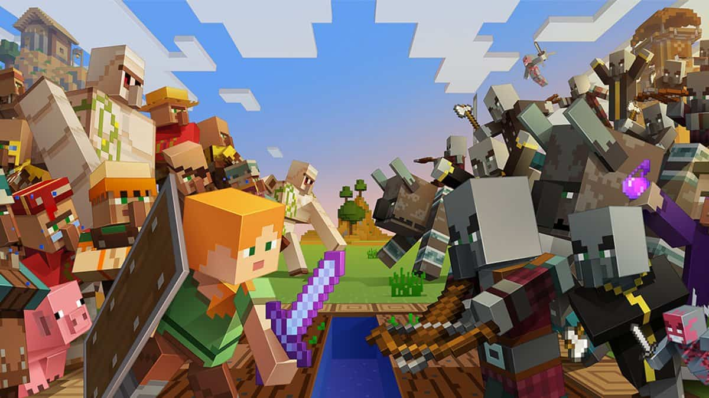
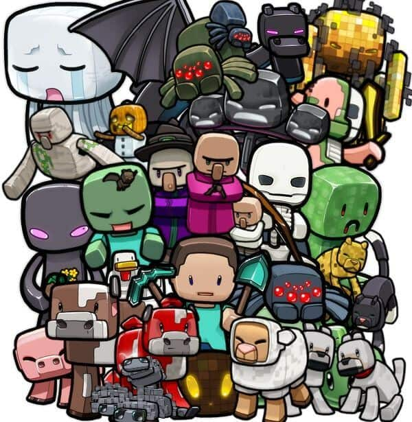
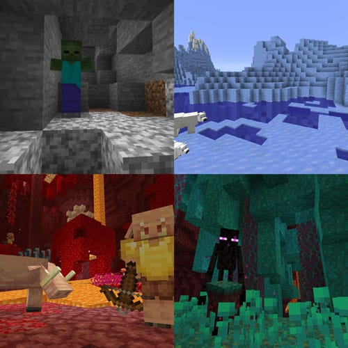

80 Loại Mobs Trong Minecraft
Mobs còn được gọi lại các loài động vật, quái vật trong Minecraft. Hầu như ai cũng biết chúng có thể là những con thú rất tinh nghịch như gấu trúc thích lăn lộn, hay những con quái vật rất nguy hiểm như thây ma, người xương, và creeper, … v.v
Đối với những người chơi mới, họ thường hay tiếp cận để tìm hiểu xem nó làm gì và có nguy hiểm hay không? Thí dụ người chơi mới tiệp cận creeper và không biết rằng nó sẽ nổ khiến người chơi sẽ chết.
Trong bài viết này, chúng mình sẽ cùng nhau tìm hiểu những loại động vật và quái vật để tìm ra cách chăn nuôi hoặc tiêu diệt chúng nhé!
Danh sách các loại mobs trong Minecraft
Hiện có hơn 80 loại mobs trong Minecraft, được chia ra làm nhiều dạng khác nhau và mỗi loại sẽ có những hành vi đặc điểm khác nhau. Từ nơi ở, cách sinh sản, cách tin tưởng người chơi và cả cách gây hại cho người chơi.
Chúng cũng có những hành vi rất đặc biệt như leo trèo, bơi lội, phá vỡ cửa gỗ và bay lượn trên bầu trời.
Loại hiền lành (Passive mobs)
Mobs hiền lành thường rất bị động không tấn công người chơi (ngoại trừ cá nóc và người tuyết). Hầu hết những loại này đều có thể chăn nuôi trong chuồng, sinh sản và giết chúng để lấy thịt.

Loại trung lập (Neutral mobs)
Mobs trung lập là những con ‘sáng nắng chiều mưa’, đôi khi chúng rất hiền lành dễ thương nhưng đôi khi chúng cũng rất hung dữ đáng sợ. Hầu hết các loại trung lập đều sẽ chuyển sang dạng thù địch khi nó bị tấn công (ngoại trừ dê núi).
Tuy vậy, cũng có những loại trung lập sẽ tấn công người chơi theo một cách tự nhiên như nhện và nhện hang sẽ tấn công người chơi khi trời tối. Người Ender sẽ tấn công khi bị khiêu khích (nhìn vào mắt), đàn Piglin sẽ nổi khùng khi một con trong đàn bị đánh.

Loại thù địch (Hostile mobs)
Mobs thù địch là một trong những loại nguy hiểm nhất, luôn luôn tìm cách tấn công khi người chơi ở gần. Dù là thế, đôi khi chúng cũng khá ngốc nghếch như mãi tìm đường đến nơi ở của bạn rơi vào một cái hố sâu và tự lăn ra chết, không biết phá nhà phá cửa, cứ đi loay hoay mãi cho đến sáng rồi bị thiêu chết… v.v
Vừa đáng yêu mà cũng vừa đáng ghét đấy nhể

Loại Boss (Boss Mobs)
Đây là dạng quái khó nhất, chứa những vật phẩm quý giá nhất mà chỉ khi bạn tiêu diệt được chúng mới nhận được. Mặc dù boss mobs rất mạnh, nhưng đôi khi có những người chơi dùng mẹo để giết các boss này một cách dễ dàng mà không tốn một giọt máu nào.